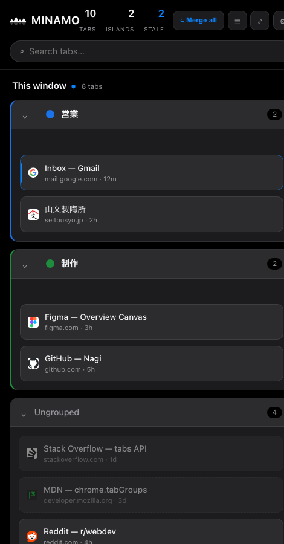

Too many tabs and windows pile up until you lose track. MINAMO turns them into one calm surface — see everything, fold windows into islands, and let what you don't need quietly fade. タブとウインドウが増えすぎて、何がどこか分からなくなる。MINAMO はそれを一つの静かな水面に変えます——全部を見渡し、窓を島に畳み、要らないものは静かに消えていく。
Free · Chrome extension · No account, no servers — everything stays in your browser. 無料 · Chrome拡張 · アカウント不要・サーバーなし。データは全部あなたのブラウザの中に。

MINAMO lives in the side panel, next to your work. It reads your real tabs and tab groups — so what you organize here organizes your actual Chrome. MINAMO はサイドパネルに常駐し、作業の隣にいます。あなたの実際のタブとタブグループを読むので、ここで整理すると本物の Chrome が片付きます。
Every window and tab on one glanceable surface. Search and jump with ⌘K.全ウインドウ・全タブを一目で。⌘K で検索してジャンプ。
Group tabs into named contexts — real Chrome tab groups, with a one-line "why is this open?".タブを名前付きの文脈に。実際の Chrome タブグループ＋「なぜ開いた?」の一行メモ。
Pull tabs and islands from other windows into this one. Fewer windows, not just navigation.別ウインドウのタブや島を今の窓へ引っ張る。渡り歩くんじゃなく、窓を減らす。
Close freely — every tab is kept for 7 days, then it fades. Nothing is truly lost.安心して閉じる——閉じたタブは7日間残り、その後そっと消える。何も失わない。
Submitted to the Chrome Web Store — pending review. Try the live demo in the meantime.Chrome Web Store に申請待ちです。それまではデモをどうぞ。